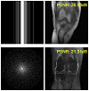

Masud An-Nur Islam Fahim
Ph.D. Student at the University of Vaasa.Interested in self-supervised learning, TTA/Post-training tuning, learning algorithms, diffusion hacks, training dynamics, inverse problems, and DL/ML theory.
LinkedIn - GitHub - Twitter - Google Scholar - Semantic Scholar


About Me
I am a Ph.D. Student in the Electric and Computer Engineering faculty at the Technion, researching computer vision and machine learning under the supervision of Prof. Michael Elad and Prof. Tomer Michaeli. I am interested in generative models and theoretical deep learning, focusing most of my recent work on diffusion models.
Prior to my Ph.D. studies, I received my B.Sc. in ECE from KUET, Bangladesh. I got my M.E. from Chosun University, S. Korea.
Publications
2023
 |
Masud An-Nur Islam Fahim, Jani Boutellier SS-TTA: Test-Time Adaption for Self-Supervised Denoising Methods CVPR 2023, in The IEEE/CVF Conference on Computer Vision and Pattern Recognition. [webpage] [code] [space] |
2023
|  | Bahjat Kawar*, Noam Elata*, Tomer Michaeli, Michael Elad GSURE-Based Diffusion Model Training with Corrupted Data ICMLW 2023, in ICML Workshop on Structured Probabilistic Inference & Generative Modeling. [code] |
Community service
I actively review papers at:- CVPR 2024, 2023, 2022
- ICCV 2023
- NeurIPS 2022
Teaching
I have taught the following courses as an Instructor:- Deep Learning and Computer Vision; Spring 2023